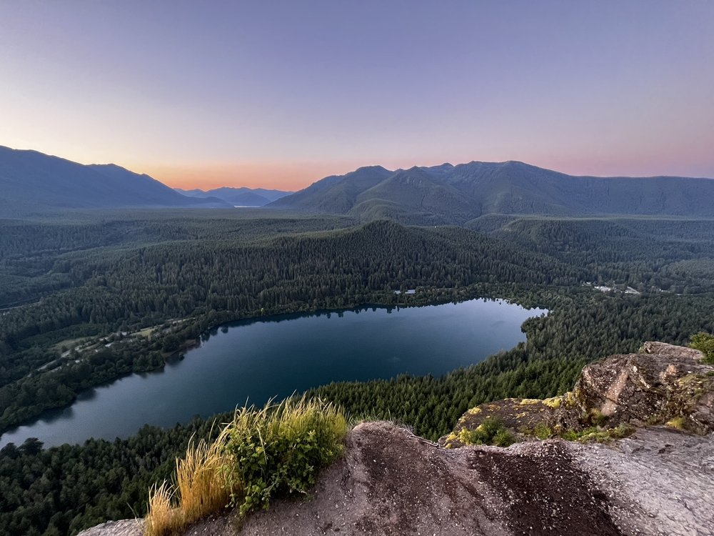

Rattlesnake Ledge Trail

Location: North Bend, Washington
Difficulty: Moderate
Distance: 4 miles round trip
Description
Rattlesnake Ledge is one of the most popular hiking trails in Washington. The hike offers amazing views of Rattlesnake Lake and surrounding mountains.
Tips
- Bring water
- Wear hiking shoes
- Start early to avoid crowds